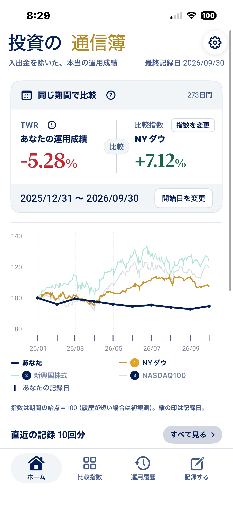
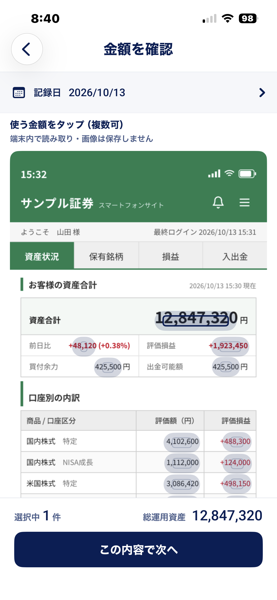
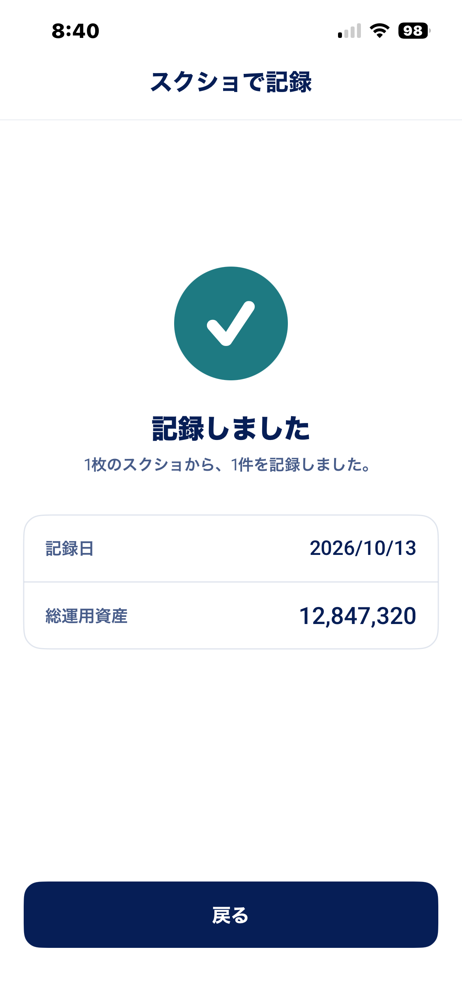
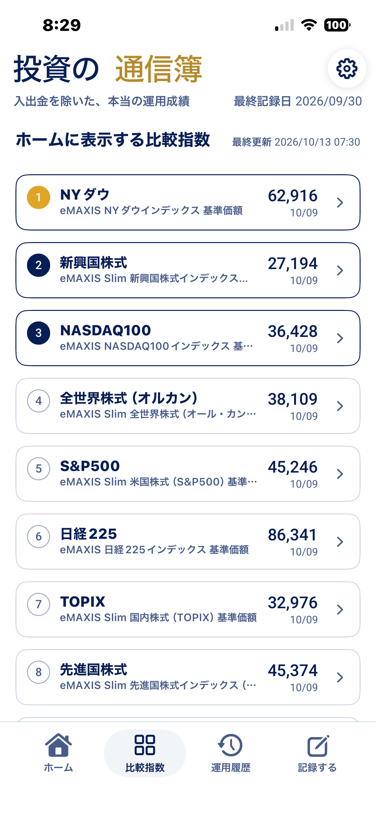
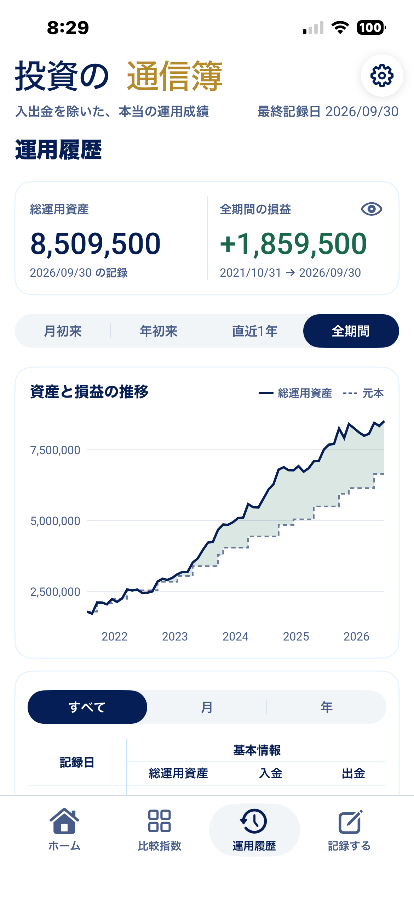

入出金を除いた、本当の運用成績
複数の証券口座をまとめて記録。入出金の影響を除いた運用成績を、市場指数と同じ期間で比較できます。口座連携は不要。スクショから金額を選ぶだけ。

機能
証券会社の資産画面をスクショして選択。読み取った金額をタップし、複数の画像・金額も合算して記録できます。画像の読み取りは端末内で行い、口座のID・パスワードは不要です。入出金があった場合は別途記録してください。


あなたの運用成績（TWR）と比較指数を、同じ始点から同じ終点まで。開始日を変えれば「あの日から今日まで」の勝ち負けがすぐ分かります。グラフは期間の始点を100にそろえた線です。

全世界株式（オルカン）、S&P500、日経225、TOPIX、NASDAQ100、FANG+など。投資信託の基準価額などを使って同じ期間の変化を比較できます。比較対象は最大3つまで選択可能です。
運用履歴では、総運用資産と元本の差がそのまま損益です。資産額と運用成績の変化を振り返り、長期の推移を確認できます。

なぜ入出金を除くのか
入金で資産が増えても、それだけでは運用が成功したとは言えません。投資の通信簿は入出金の影響を除いた運用成績（TWR）を計算し、指数との比較に使います。
インデックス投資に加えて個別株も持っているなら、ポートフォリオ全体の成績を指数と比べてみませんか。指数との差を知ることは、これまでの投資判断を振り返る手がかりになります。※個別株だけの寄与を算出する機能ではありません。
安心
資産額も入出金も、サーバーには送りません。開発者にも見えません。比較指数の取得にはインターネットを利用します。機種変更のときは、バックアップ機能でファイルに書き出して、新しい端末で復元してください。
まずは資産額を記録。入出金があった日は、その金額も記録すると運用成績をより正確に比較できます。